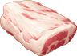

Yeti
By level
Where it lives deeper in a region it is stronger. See Levels.
| Level | Hitpoints | Attack | Defence | Experience |
|---|---|---|---|---|
| 9 | 208 | 13 | 4 | 159 |
| 10 | 230 | 15 | 4 | 174 |
| 12 | 275 | 17 | 4 | 203 |
| 31 | 1132 | 32 | 6 | 486 |
| 32 | 1249 | 33 | 6 | 501 |
| 33 | 1375 | 34 | 6 | 516 |
| 34 | 1510 | 36 | 7 | 531 |
| 35 | 1655 | 37 | 7 | 546 |
| 36 | 1794 | 38 | 7 | 561 |
| 37 | 1943 | 39 | 7 | 575 |
| 38 | 2102 | 40 | 7 | 590 |
| 39 | 2272 | 41 | 8 | 605 |
| 40 | 2453 | 42 | 8 | 620 |
| 41 | 2578 | 43 | 8 | 635 |
Locations
- (level 39)
- (level 38)
- (level 39)
- (level 38)
- (level 36-37)
- (level 36)
- (level 37)
- (level 36)
- (level 37)
- (level 34)
- (level 35)
- (level 36)
- (level 35)
- (level 35)
- (level 35)
- Stonecrest Pass (level 9-10)
- (level 35)
- (level 35)
- (level 35)
- (level 33)
- (level 10)
- (level 35)
- (level 12)
- (level 37)
- (level 36)
- (level 38)
- (level 37)
- (level 38)
- (level 35)
- (level 33-34)
- (level 31)
- (level 31)
- (level 38)
- (level 36)
- (level 36)
- (level 36)
- (level 31-32)
- (level 32)
- (level 39)
- (level 39)
- (level 37-38)
- (level 37)
- (level 33)
- (level 31)
- (level 40)
- (level 39)
- (level 37)
- (level 37)
- (level 36)
- (level 35)
- (level 40)
- (level 39)
- (level 38-39)
- (level 35)
- (level 34)
- (level 41)
- (level 38-39)
- (level 38)
- (level 35-36)
- Trollheim Caves (level 33)
Drops
| Item | Amount | Chance a kill |
|---|---|---|
| 50 | 12.5% | |
| 75 | 8.3% | |
 Yeti Meat | 1 | 3.6% |
| 1 | 0.4% | |
| 1 | 80% | |
| 1 | 40% |
Taming
Weaken it, stand next to it and choose Tame with a  Monster Treat. Taming 65 is the comfortable level; from Taming 45 it can be tried. See Taming and Beasts.
Monster Treat. Taming 65 is the comfortable level; from Taming 45 it can be tried. See Taming and Beasts.
| Element | Water |
|---|---|
| Body | ground |
| Ranch produce | |
| Moves | Tackle, Splash, Bite, Mend Tide (level 1); Tackle, Splash, Bubble Jet, Tidal Crash (level 12) |